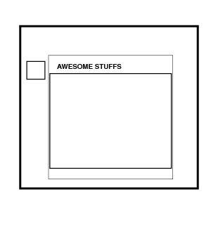
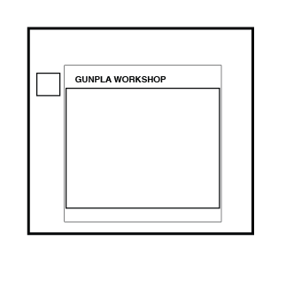
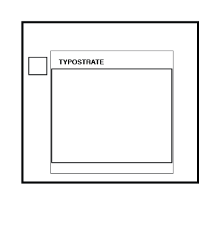
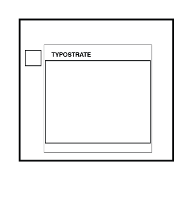
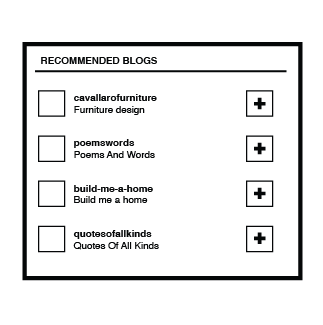

Design
Graphic Design
Illustration
Furniture Design
Typography
Building Dashboard
This is where Tumblr gives users explore option after finishing building a dashboard
Profile 3: Welcome to my blog. My name is iseebitarou. I'm Japanese. Youtube video bloger. I'm not good at English. Collecting funny products. This blog is to introduce my collection. Please follow my blog. - "ok this system is not really acurate"

Profile 2: This is a place where I show my gunpla builds and other builds throughout the gundam community."hmmm, this is not what I want to see

Profile 1: Daily posts about graphic design, lettering, typography, calligraphy and more by TYPOSTRATE.COM
"Cool. This is what I'm looking for" 
"Cool. This is what I'm looking for" 
Tumblr also recommended blogs. Usually they are like what you see in you dashboard. Or maybe it could be sponsor or people who pay to be recommened.
